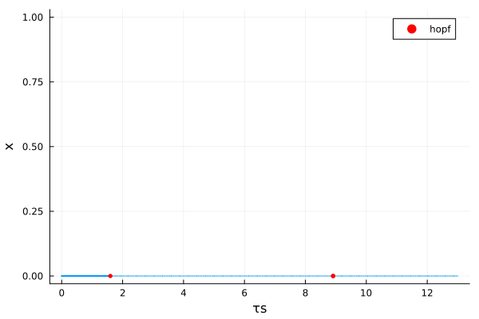
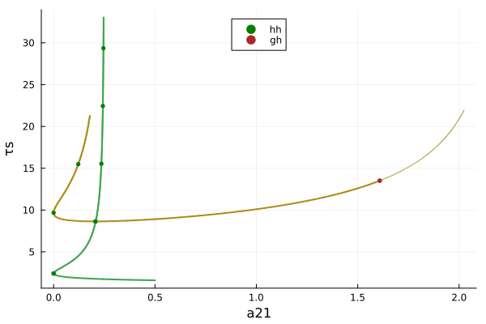

Neuron model (codim 2, periodic orbits)
Consider the neuron model
\[\left\{\begin{array}{l} \dot{x}_1(t)=-\kappa x_1(t)+\beta \tanh \left(x_1\left(t-\tau_s\right)\right)+a_{12} \tanh \left(x_2\left(t-\tau_2\right)\right) \\ \dot{x_2}(t)=-\kappa x_2(t)+\beta \tanh \left(x_2\left(t-\tau_s\right)\right)+a_{21} \tanh \left(x_1\left(t-\tau_1\right)\right) \end{array}\right.\]
Continuation and codim 1 bifurcations
We first instantiate the model
using Revise, DDEBifurcationKit, Plotsusing BifurcationKitconst BK = BifurcationKitfunction neuronVF(x, xd, p) (; κ, β, a12, a21, τs, τ1, τ2) = p [ -κ * x[1] + β * tanh(xd.u[3][1]) + a12 * tanh(xd.u[2][2]), -κ * x[2] + β * tanh(xd.u[3][2]) + a21 * tanh(xd.u[1][1]) ]enddelaysF(par) = [par.τ1, par.τ2, par.τs]pars = (κ = 0.5, β = -1, a12 = 1, a21 = 0.5, τ1 = 0.2, τ2 = 0.2, τs = 1.5)x0 = [0.01, 0.001]prob = ConstantDDEBifProblem(neuronVF, delaysF, x0, pars, (@optic _.τs), record_from_solution = (x,p;k...)->x[1])optn = NewtonPar(eigsolver = DDE_DefaultEig(maxit = 200))opts = ContinuationPar(p_max = 13., p_min = 0., newton_options = optn, ds = -0.01, detect_bifurcation = 3, nev = 15, dsmax = 0.2, n_inversion = 4)br = continuation(prob, PALC(), opts; bothside = true, normC = norminf) ┌─ Curve type: EquilibriumCont
├─ Number of points: 60
├─ Type of vectors: Vector{Float64}
├─ Parameter τs starts at 13.0, ends at 0.0
├─ Algo: PALC [Secant]
└─ Special points:
- # 1, endpoint at τs ≈ +13.00000000, step = 0
- # 2, hopf at τs ≈ +8.90969445 ∈ (+8.90527503, +8.90969445), |δp|=4e-03, [converged], δ = (-2, -2), step = 15
- # 3, hopf at τs ≈ +1.59721596 ∈ (+1.59714604, +1.59721596), |δp|=7e-05, [converged], δ = (-2, -2), step = 43
- # 4, endpoint at τs ≈ +0.00000000, step = 59
We then plot the branch
scene = plot(br)
Normal forms computation
As in BifurcationKit.jl, it is straightforward to compute the normal forms.
hopfpt = BK.get_normal_form(br, 2)SuperCritical - Hopf bifurcation point at τs ≈ 8.909694447616149.
Frequency ω ≈ 0.8592867628281147
Period of the periodic orbit ≈ 7.3120936792976385
Normal form z⋅(iω + a⋅δτs + b⋅|z|²):
┌─ a = 0.01253261874839123 + 0.09759404473781794im
└─ b = -0.04708036126526761 - 0.032011279449210304im
Continuation of Hopf points
We follow the Hopf points in the parameter plane $(a_{21}, \tau_s)$. We tell the solver to consider br.specialpoint[3] and continue it.
# continuation of the first Hopf pointbrhopf = continuation(br, 3, (@optic _.a21), ContinuationPar(br.contparams, detect_bifurcation = 1, dsmax = 0.05, max_steps = 230, p_max = 15., p_min = -1.,ds = -0.02); detect_codim2_bifurcation = 2, start_with_eigen = true)# continuation of the second Hopf pointbrhopf2 = continuation(br, 2, (@optic _.a21), ContinuationPar(br.contparams, detect_bifurcation = 1, dsmax = 0.05, max_steps = 100, p_max = 15., p_min = -1.,ds = -0.01, n_inversion = 4); detect_codim2_bifurcation = 2, start_with_eigen = true, bothside = true )scene = plot(brhopf, brhopf2, legend = :top)
Branch of periodic orbits
We change the continuation parameter and study the bifurcations as function of $a_{21}$.
prob2 = ConstantDDEBifProblem(neuronVF, delaysF, x0, pars, (@optic _.a21))
br2 = BK.continuation(prob2, PALC(), ContinuationPar(opts, ds = 0.1, p_max = 3., n_inversion = 4); verbosity = 0, plot = false, normC = norminf)We then compute the branch of periodic orbits from the Hopf bifurcation points using orthogonal collocation.
# continuation parameters
opts_po_cont = ContinuationPar(ds = 1e-3, p_max = 3., max_steps = 100, tol_stability = 1e-3)
br_pocoll = @time continuation(
br2, 1, opts_po_cont,
Collocation(30, 5; jacobian = BK.AutoDiffDense());
normC = norminf,
)
scene = plot(br2, br_pocoll)We can plot the periodic orbit as they approach the homoclinic point.
scene = plot(layout = 2)
for ii = 1:10:110
solpo = BK.get_periodic_orbit(br_pocoll, ii)
plot!(scene, solpo.t ./ solpo.t[end], solpo.u[1,:], label = "", subplot = 1)
end
xlabel!(scene, "t / period", subplot = 1)
ylabel!(scene, "V1", subplot = 1)
plot!(scene, br_pocoll, vars = (:param, :period), subplot = 2, xlims=(2.2,2.4))
scene